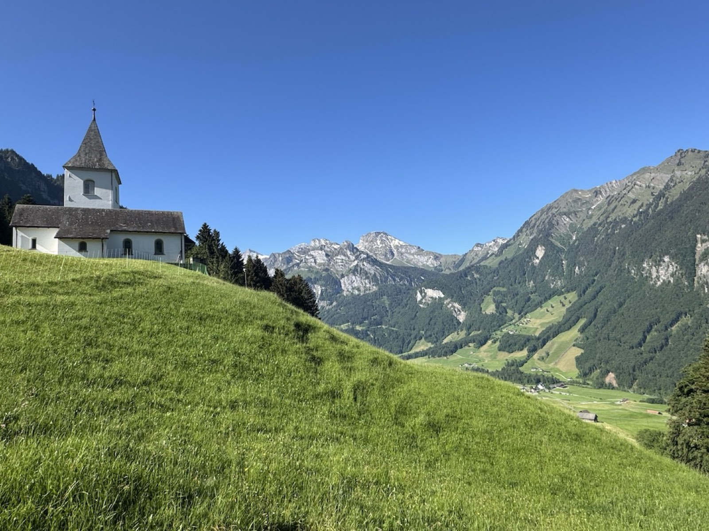

Walks by canton
Choose the cantons you want to explore and browse walks near home or further afield.

The walking app for Switzerland
From family-friendly forest loops to spectacular alpine routes — Swissplore brings route details, photos and maps together in one place.
What you can do
Choose the cantons you want to explore and browse walks near home or further afield.
Route, description and photos for each walk, so you know what to expect before you set off.
Keep a list of the walks you love — and the ones you want to try next.
Upload routes with photos and a description. New walks are checked before others can see them.
An optional subscription unlocks the live map on walk pages.
Use Swissplore in English, German, French or Italian.

Start straight away
Open the app and tap “Continue without an account” to start browsing walks. Create a free account whenever you want to save favourites, upload routes or subscribe to Swissplore Plus.
Trail conditions change with the weather and the seasons. Check conditions before you go, bring the right equipment and choose routes that suit your abilities.
We read every message — whether it’s about your account, a walk or Swissplore Plus.